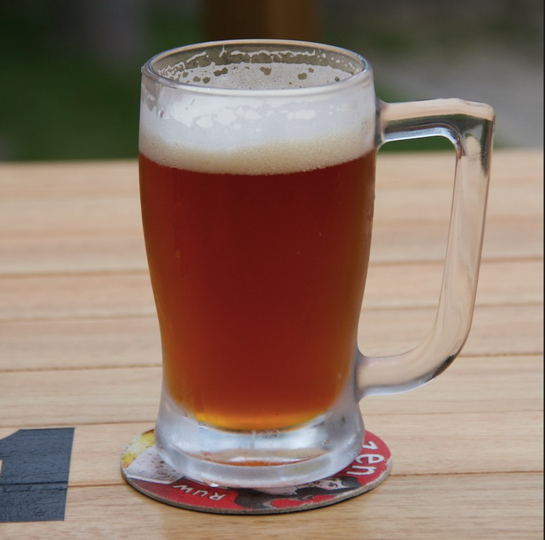
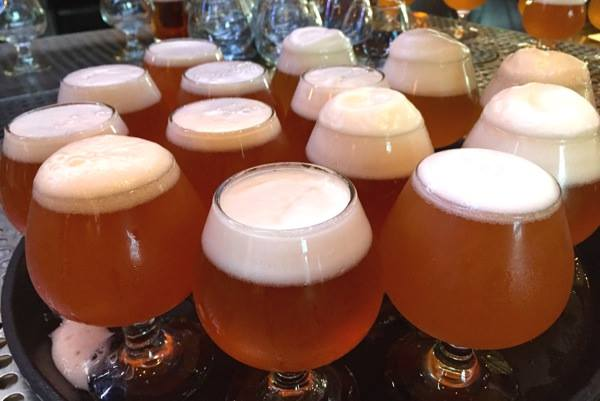

Belgian Pale Ale
Esse estilo começou a ser produzido em meados de 1700, quando a tecnologia de refrigeração dava seus primeiros passos, isso possibilitou a preparação e armazenamento das cervejas, sem ficar sujeito as estações do ano.
As trocas culturais e de especiarias entre belgas e ingleses durante o período da segunda guerra, trouxe muitos benefícios para o setor cervejeiro. As cervejarias belgas passaram a utilizar lúpulos e leveduras do Reino Unido em alguns de seus estilos, aperfeiçoando ao ponto de poder competir com as cervejas alemãs e as Pilsners thecas que se disseminavam pela Europa. O resultado foi uma das cervejas artesanais mais populares da Bélgica, mas com seu próprio caráter.
A nossa Belgian Pale Ale é uma versão com coloração que varia entre o âmbar e o cobre, espuma branca, cremosa, compacta com alto drinkability e ideal para ser consumida no dia-a-dia.
Uma cerveja leve e maltada, apresentando aroma frutado parecendo melão. Tem um sabor inicial suave, moderadamente maltado, com um perfil variável de tostado, biscoito, de noz e leves notas de caramelo, mesclado com um frutado moderadamente alto.
TELEBIER
Entregamos somente para a região de Torres e suas cercanias.
Click nos links abaixo e fale diretamente pelo whatsapp com Diego ou Cristiano, Obrigado!
“Sem dúvida que a melhor invenção do Homem foi a cerveja. Bom, eu sei que a roda também foi uma grande invenção, mas garanto-vos que uma roda não vai tão bem com uma pizza.” – Dave Barry